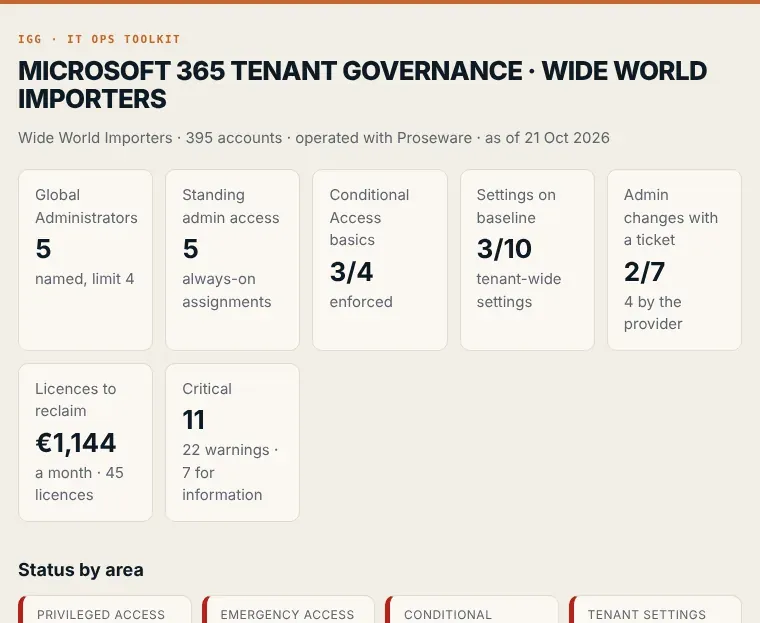

A Microsoft 365 tenant drifts one reasonable change at a time: a Global Administrator given for a migration is still always-on two years later, and a change to allow automatic mail forwarding is rejected by the change board and made anyway. That is the kind of drift the monthly governance review published with this post is built to catch. It runs on a read-only export of a made-up retailer with 395 accounts, operated by a fictional provider, with the problems placed on purpose.
When a provider runs the platform, its engineers may hold permanent admin roles with no end date, while the risk stays with the internal team, which needs a short list for its monthly review.
Every admin change matched to a ticket
The review covers six areas: privileged access, emergency accounts, the four Conditional Access basics, ten tenant settings against a baseline, licences, and sensitive admin changes. Conditional Access is the set of rules that decides who can sign in, from where and how.
Each change to roles, Conditional Access, tenant or mail-flow settings is matched to a change ticket by implementer and window, and comes out as approved, emergency, rejected, no ticket or made with an emergency account. A legacy authentication block left in report-only mode since July is the kind of setting that shows up as drift.
The output is a web report, a summary with a section for the service review with the provider, a list of actions, privileged-access.csv for the quarterly access review, licence-reclaim.csv and admin-changes.csv.
How to use it with real data
The analysis runs on Python with the standard library only, with 16 tests and a runbook. A read-only PowerShell exporter reads Microsoft Graph and, optionally, Exchange Online, using a Global Reader account. Role names and the Conditional Access mapping are checked on the first run, and the baseline is agreed with security beforehand.
Where it comes from
It comes from running Microsoft 365 as Global Administrator: PIM and just-in-time access, admin rights granted only for a limited time, Conditional Access, Exchange Online, Purview, tenant-to-tenant migrations and changes through CAB with providers. Governance is not a one-off hardening project but a monthly habit, and the change ticket keeps the provider and the internal team on the same page.
Want to bring it to your environment or adapt it to your case? Get in touch and we can look at it together.
Tech Career Lab · newsletter
Found this useful? Every two weeks I send one practical idea for IT professionals: LinkedIn, projects, networking and hiring processes.
Sign up and get the 33 ideas →